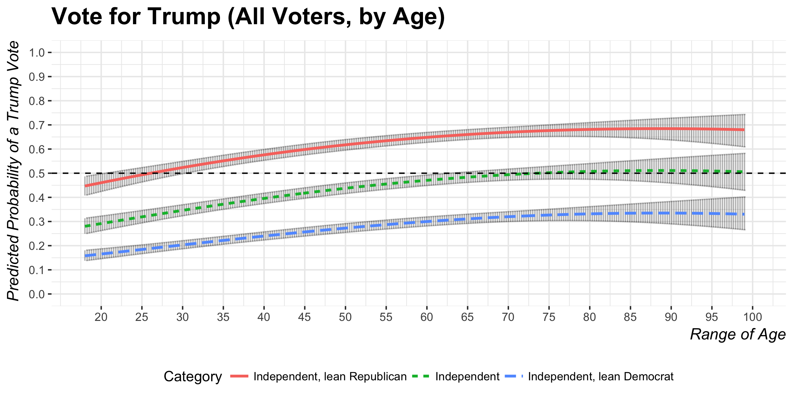
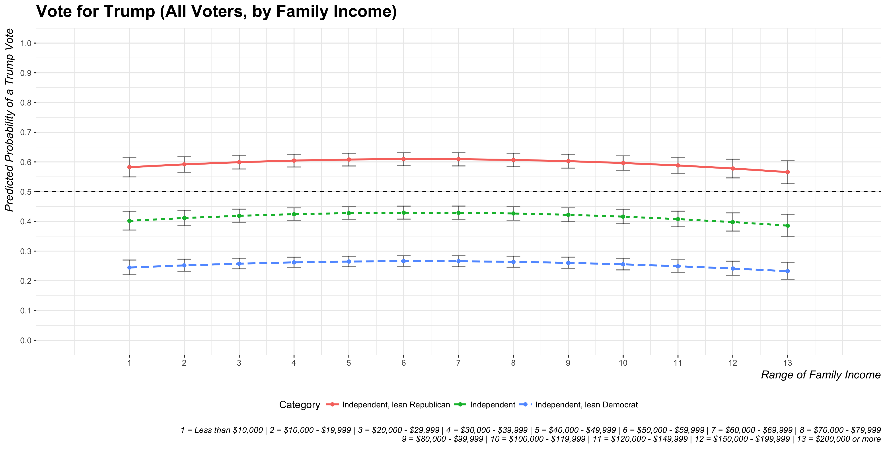
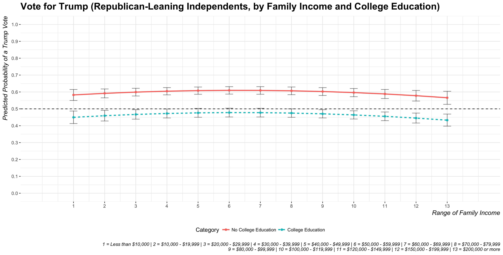
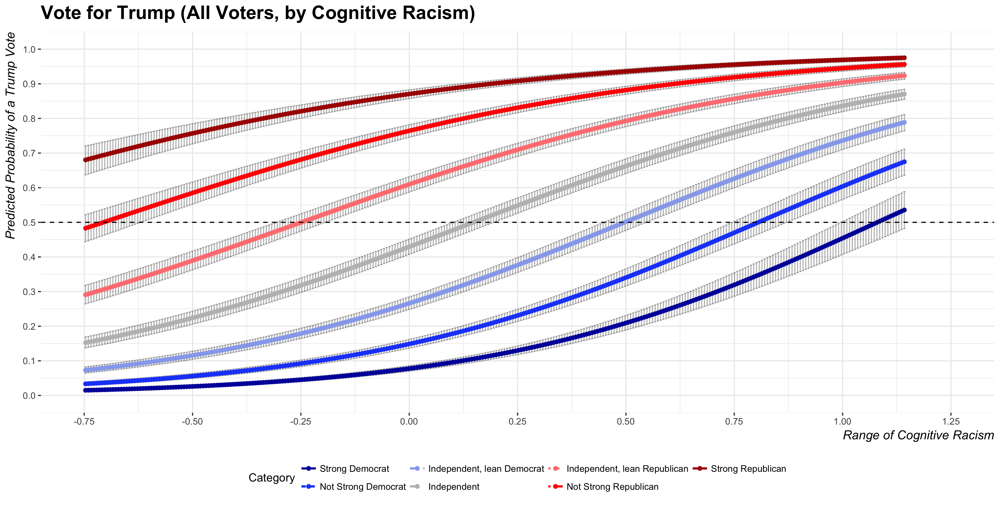

Age, Income, Partisanship, Racial Attitudes and the Trump Vote in 2016

- A Trump supporter at a rally in Myrtle Beach, S.C., signals his feelings about Mexican immigration. (ARON P. BERNSTEIN/ GETTY IMAGES)
I like to do some kind of statistical analysis of public opinion/attitudes data at the end of every semester, in part as a diversion from grading, but also to teach myself some new parlor tricks in R. The topics have focused on current events like the topics of Trump’s Twitter outbursts, Millennials and democratic support, America’s “strong leader problem”, and gun control. This one will explore the recently released Cooperative Congressional Election Study (CCES) data from 2016 to explore the correlates of an individual’s self-reported Trump vote in the 2016 election.
The findings square well with intuition. I should also note that while these findings make sense, the results I report follow some tinkering with model specification (i.e. “hey, let’s interact those two things or square that term to see what happens”) and so a critique that my garden has a few forked paths would be fair game. I doubt they seriously alter inferences, but it’s a fair critique that would be troublesome if I were submitting it for review. Code and data are freely available if you’d like to throw rocks at these results. The results themselves are interesting and a tl;dr version follows.
tl;dr: Partisanship is a hell of a drug, constituting the largest (duh…) and most precise (duh…) effect in all the models. Cognitive racism has the second largest (estimated) magnitude effect and is the second most precise regression parameter. These interact in interesting ways. Age has a curvilinear effect. Older citizens were more likely to vote for Trump (duh…) but older Boomers and Silent folk in the sample experience a slight decline in their proclivity to vote for Trump. Increasing family income has no overall effect but there is an estimated curvilinear effect in which voters appear to be less likely to vote for Trump as family income increases past the median. Nothing here is terribly novel, per se. Just interesting.
I’ll detail these findings below, but I’ll start first with the data and the methods. I understand this isn’t terribly exciting for the lay reader so I offer a table of contents for readers who want to skip ahead.
- Data and Methods
- Results
- The Effect of Age
- The Curious Effect of Family Income
- How Partisanship and Cognitive Racism Interact
- Conclusion and Implications
- Code and Footnotes
Data and Methods
I downloaded the full first release of the 2016 CCES data, which is a stratified random sample of 64,600 Americans in which sampling was done prior to the election and after it. It’s data heaven for scholars who want to get at subgroups (e.g. South Carolinians, Hispanics, Americans with six-figure incomes) for which there are not a lot of observations in other outlets (e.g. General Social Survey, American National Election Survey) that have a sample size around 1,000.
Dependent Variable
My dependent variable is whether the respondent said s/he voted for Trump in the 2016 election. While I will not address the issue in this post, scholars interested in this important topic may want to be mindful of the possibility of non-random missingness.1 Almost 30% of respondents did not answer this question. The percentage of Trump votes in the remaining data is 41.45%.
Basic Demographics
I choose the usual suspects for explanatory variables. I gather the respondent’s age (technically: 2016 - reported year of birth) and square the variable to check for a non-linear effect. I code a dummy variable for women and the college educated. These were easy enough.
CCES asks about family income in 16 ordinal categories. These range from less than $10,000 (1) to $500,000 or more (16), though I condense 13-16 to 13 to create a $200,000 or more category. Survey researchers interested in income know this is routinely a sore spot for those concerned about non-random missingness, but missingness is just about 10% of the data here. I also include a square term for family income with the intuition that the peculiarities of Trump’s policies (e.g. free trade and other public goods) might have caused some wealthier folks in the suburbs (hello, Orange County) who would otherwise vote for Republicans to cast their vote for another candidate.
I include politically relevant ethnic/racial groups as fixed effects. These are African-Americans, Hispanics, and other races. To be clear, I’m using the race variable in CCES. Hispanic is an ethnicity, not a race. Alas.2
Political and Religious Values
The primary variables of interest proxy political and religious values. I include everyone’s favorite seven-item partisanship variable (i.e. strong Democrat to strong Republican). I include the five-item ideology variable, which goes from “very liberal” to “very conservative.” I estimate what I call a “latent religiosity” variable that gauges religiosity of the evangelical crowd in the United States. This is a latent estimate from a graded response model of variables, derived from Pew, that ask whether a respondent is a born-again Christian, how important religion is to the respondent, how often they attend church, and how often they pray. The ensuing estimate has a mean of zero and a standard deviation of one. People interested in more focused analyses of religion and politics should follow someone like Ryan Burge (Eastern Illinois) or, my wonderful colleague, Laura Olson at Clemson.
The Problem(s) of Racial Attitudes
The problem of racial attitudes is the 800-pound gorilla (well, one of them) in the 2016 election. It’s a problem for two reasons I’ll mention here.
One, it seemed to matter a lot in the 2016 election. No other candidate raised subtext to text like Trump, replacing the familiar “dog whistle” of past Republicans (e.g. Nixon’s “law and order,” Reagan’s “welfare queen,” Bush’s Horton ad) with a foghorn mounted on a tugboat. The start of his political career was a witch hunt to prove Barack Obama was Kenya-born with a forged birth certificate. Incitement of racial attitudes manifested in other aspects of his campaign, including staffing (e.g. Steve Bannon, whose website features a prominent category for “black crimes”), inciting violence against predominantly persons of color protestors at rallies, and the core of his proposed policies (e.g. the wall, the ban). Those who cast doubt on the role of racism in the 2016 general election instead draw attention to “economic anxiety” or working-class whites or repurpose the problem of racism as a scholarly issue of authoritarianism. More recent evidence suggests it’s racism—not authoritarianism and not economic concerns—that influenced some of Trump’s voters. Alas, it’s a problem the extent to which it’s debatable what motivated Trump’s die-hards among those factors.
The second problem is a measurement problem. Christopher DeSante (Indiana) and Candis Smith (North Carolina) have a working paper presented at this year’s MPSA conference that highlights a few shortcomings with the ANES’ “racial resentment” items. The four items from ANES proxy attitudes about the “model minority” myth (e.g. “Irish, Italians, Jewish and many other minorities overcame prejudice… Blacks should do the same.”) and the legacy of slavery and civil rights abuses (e.g. “Generations of slavery and discrimination have created conditions that make it difficult for blacks”). The problem is these “racial resentment” items in ANES measure the concept that ANES wants, but they also measure conservative ideology. In other words, a respondent who firmly believes in a “conservative” ideology of “rugged individualism” could answer the same questions the same way as an objective racist even if racial resentment doesn’t motivate the answer. DeSante and Smith want a series of questions that measure or predict racism, but not conservative ideology. They found four that CCES incorporated into its 2016 survey. These are five-point Likert items:
- “White people in the U.S. have certain advantages because of the color of their skin.”
- “Racial problems in the U.S. are rare, isolated situations.”
- “I am angry that racism exists.”
- “I often find myself fearful of other races.”
DeSante and Smith caution that these four items do not capture one concept. Rather, they capture two. The first two proxy what they call “cognitive racism” (i.e. a respondents’ awareness of racism, or lack thereof). The second two proxy what they call “empathetic racism” (i.e. sympathy [or lack thereof] for the experiences of racial minorities). I construct both indices using a graded response model, which also partially mollifies the problem of missing data. I should note that missingness on these items constitutes around 20% of the original data frame and bias could still be a major problem in another form.
Model Choice
The dependent variables are binary, making a logistic transformation of the regression parameters appropriate. The models are ultimately a mixed effects estimation with just a random effect for states. I also make sure to scale all non-binary predictors by two standard deviations to provide a rough comparability of coefficient size, certainly among those variables scaled.
Results
I estimate four models explaining a vote for Trump. Model 1 is all voters. Model 2 is just white voters. Model 3 subsets the data to just those who said they voted for Obama in 2012. Model 4 analyzes a vote for Trump among those who self-identify as Democrats. The results follow.
| Voted for Trump | ||||
| All Voters | White Voters | Obama Voters | Democrats | |
| Model 1 | Model 2 | Model 3 | Model 4 | |
| Basic Socio-demographics | ||||
| Age | 0.543*** | 0.552*** | -0.339*** | -0.155* |
| (0.042) | (0.048) | (0.074) | (0.081) | |
| Age^2 | -0.224*** | -0.219** | -0.120 | -0.236 |
| (0.077) | (0.086) | (0.148) | (0.159) | |
| Female | -0.086** | -0.032 | -0.176*** | -0.355*** |
| (0.037) | (0.041) | (0.062) | (0.071) | |
| College Educated | -0.535*** | -0.636*** | -0.487*** | -0.435*** |
| (0.040) | (0.045) | (0.071) | (0.084) | |
| Family Income | 0.0003 | -0.054 | 0.106 | 0.112 |
| (0.042) | (0.047) | (0.073) | (0.082) | |
| Family Income^2 | -0.168** | -0.131 | -0.400*** | -0.458*** |
| (0.074) | (0.084) | (0.130) | (0.150) | |
| Black | -1.041*** | -0.911*** | -1.457*** | |
| (0.091) | (0.122) | (0.138) | ||
| Hispanic/Latino | -0.302*** | -0.452*** | -0.612*** | |
| (0.073) | (0.117) | (0.128) | ||
| Other Race | -0.196* | -0.289 | -0.493** | |
| (0.109) | (0.176) | (0.215) | ||
| Political/Religious Values | ||||
| Partisanship (D to R) | 3.113*** | 3.171*** | 2.542*** | |
| (0.049) | (0.056) | (0.080) | ||
| Ideology (L to C) | 1.217*** | 1.322*** | 1.003*** | 1.191*** |
| (0.053) | (0.061) | (0.087) | (0.087) | |
| Religiosity | 0.562*** | 0.599*** | 0.719*** | 0.750*** |
| (0.040) | (0.044) | (0.069) | (0.082) | |
| Cognitive Racism | 1.971*** | 1.971*** | 1.926*** | 1.928*** |
| (0.049) | (0.057) | (0.083) | (0.093) | |
| Empathetic Racism | 0.636*** | 0.657*** | 0.780*** | 0.808*** |
| (0.038) | (0.042) | (0.064) | (0.075) | |
| Partisanship*Cognitive Racism | -0.533*** | -0.664*** | -0.235 | |
| (0.113) | (0.130) | (0.199) | ||
| Constant | -0.519*** | -0.535*** | -0.914*** | -1.498*** |
| (0.049) | (0.054) | (0.074) | (0.087) | |
| N | 38,494 | 29,724 | 19,503 | 15,699 |
| ***p < .01; **p < .05; *p < .1 | ||||
| All models include a random effect for state, which I omit here for presentation. | ||||
Most findings here are straight-forward. Age and age-squared are both discernible from zero. The effect of increasing age is positive (duh…) but the squared term is negative. I’ll produce a graph below that suggests the negative effect of the square term doesn’t imply the elderly are more like the younger respondents (who were much less likely to vote for Trump). Instead, the effect of increasing age more or less plateaus among the later Boomers or the Silent folk.
Family income has no discernible effect while the square term is significant. I’ll produce a graph below that suggests the effect of increasing family income in Model 1 is slightly positive, but effectively flat as the coefficient suggests, across the first several income categories. Thereafter, the effect becomes negative with some interesting implications for independents who lean Republican.

- Obligatory viral photo from the Women's March.
Women were less likely to vote for Trump than men, all else equal across all voters. We can discern the negative coefficient from zero but the substantive effect appears to be rather small relative to other predictors. There is no difference between women and men when we subset the analysis to just white people. This squares well with the observation that white women, no matter the Billy Bush video, voted for Trump more than Clinton. The viral photo from the Women’s March in DC earlier this year is obligatory. I don’t make the rules; I just follow them.
Consistent with the implications of Trump’s “I love the poorly educated” remark, the college educated were more likely to say they did not vote for Trump than those who did not attend or graduate from college. The effect is precise across all four models and among the larger effects in this category of variables.
The race fixed effects are all intuitive. It should be unsurprising that these race fixed effects are all negative since they communicate the natural logged odds of voting for Trump for that category relative to the baseline of white respondents. African-Americans were unlikely to vote for Trump relative to white respondents and the estimated effect is the largest among the socio-demographic variables. Including all voters, Hispanics and people from other races were less likely to vote for Trump. A similar story holds in Model 3 among the Obama voters, though we cannot discern a difference between other races and white people. The effects are negative and significant for all race fixed effects in Model 4, which subsets the data to Democrats to see who voted for Trump. Put in other words, the results are consistent with the suggestion that whites were more likely to vote for Trump than those from other races and that those who did break from Obama to Trump, or crossed party lines to vote for him, were white. Of course, this isn’t a terribly controversial or path-breaking statement.
The political/religious values have some of the most precise and largest estimated effects. Partisanship, the strongest drug in American politics, has the largest effect.3 Republican partisans vote for Republicans and Democrat partisans vote for Democrats. We can find cases contrary to that rule. We can also wonder if the Democrats that did cross party lines to vote for Trump were the “pivotal” Trump voter in this election (i.e. those in Michigan, Pennsylvania, and Wisconsin). However, they’re not the “typical” Trump voter. The typical Trump voter is a garden-variety Republican partisan.
The religiosity variable is also positive and significant. The more religious a respondent is on the items comprising the measure—born-again identification, importance of religion, church attendance, and prayer frequency—the more likely they voted for Trump. This makes sense. “Values voters” are more likely to be Republican and were more likely to vote for Trump notwithstanding the peculiarities of Trump (i.e. everything) and his status as vanguard of the values voters’ party.
The two racism variables are also positive and significant. The effect of cognitive racism is larger than the effect of empathetic racism when placed on a common scale. In fact, the effect of cognitive racism is not only the second largest estimated effect in the model, it’s also the second most precise.
The interaction between cognitive racism and partisanship is negative and significant in Model 1 and Model 2, but is insignificant in Model 3. I’ll show a graph below that the negative and significant coefficients in Model 1 and Model 2 indicate there’s greater distance between Republicans and Democrats among the least racist than the most racist. In other words, increasing cognitive racism has a stronger effect on Democrats than Republicans as Republicans were unlikely to not vote for Trump anyway.
The Effect of Age
I provide some quantities of interest from Model 1 to better illustrate the findings. I start with the effect of increasing age for independents, including those who say they lean to either party. Every other variable in the model is set to either the mean (i.e. zero for the standardized variables) or the typical case. Thus, the graph below shows the effect of age for three different values of the partisanship variable for the white non-college-educated self-described “moderate” woman of average income with the mean score on the religiosity, ideology, and two racism variables.

The results show the curvilinear effect that the age and age-squared terms imply. However, the “rainbow” you might otherwise see in a curvilinear relationship where a variable is positive and the square effect is negative is not complete. Instead, the graph suggests a near plateau for the older Boomers and the Silent folk who appear in the sample. The probability of a Trump vote starts to decrease, but only slightly, near the end of the age variable.
The Curious Effect of Family Income
Increasing income has no discernible effect on the likelihood of voting for Trump but the square term is negative and significant. The graph below illustrates what this looks like in the data for the three categories of independent voters. Again, everything else is set at the mean or the typical case (i.e. white non-college-educated self-described “moderate” women of average age with the mean score on the religiosity, ideology, and two racism variables).

The category for Republican-leaning independents interests again. The poorest Republican-leaning independents in this category are likely to vote for Trump and the likelihood increases, however slightly, as income increases. The highest predicted probability is for the sixth income category ($50,000 - $59,999), which incidently includes the median household income. Thereafter, the predicted probability of a Trump vote starts to decrease even if the associated confidence intervals do not overlap with .5.
If you’re curious, there are any number of ways to “model” this relationship. If you include all respondents (i.e. I drop those who say “I’m not sure” or said they didn’t vote), the relationship becomes a bit more intriguing. The confidence interval for the highest income category overlaps .5. If you retain the original 16 income categories on top of that, the predicted probability is actually .49. The relationship becomes more uncertain because there are only 177 total observations in the highest income category of $500,000 or more. That’s before listwise deletion of missing data excludes more observations on top of that. Splitting these observations further by partisanship creates even smaller subgroups. It’s why I condensed the highest income categories to $200,000 and above to mitigate that problem.
Income is also tough for survey researchers. There is likely a difference in the proclivity of a Trump vote for a person whose household income is $200,000 versus one whose household income is $2,000,000. That latter person probably cares a lot more about capital gains taxes than the former person. However, that millionaire is likely to opt right out the sample if you get more specific about income. So, you get what you get and concede some heterogeneity in the highest income category as a result.
That said, it’s not clear what’s ultimately at stake in trying to model the effect of increasing income on a vote for Trump unless you care about specific subgroups that I don’t estimate here. Independents were more likely to vote for someone other than Trump. Increasing income has no implication for Democratic-leaning independents either. More devoted partisans seemed likely to vote for their party’s candidate independent of income considerations. There is just one intriguing possibility for wealthier Republican-leaning independents and splitting the Republican-leaning independents further into subgroups of college-educated and those without a college diploma.

I’m not sure how much we can infer here, but the results might be consistent with a case like Orange County. Therein, a wealthier county with a lot of suburbanites and college graduates accustomed to voting for Republican candidates in every election since the Great Depression switched to Clinton instead. We saw a similar story unfold in TX-32, though Democrats should kick themselves for not running a candidate to oppose Pete Sessions in the district’s House race.
Beyond that, family income doesn’t appear to matter a whole lot in the 2016 election.
How Partisanship and Cognitive Racism Interact
Model 1 and Model 2 showed statistically significant negative coefficients for the interaction between cognitive racism and partisanship. It implies the following two things the graph shows below. One, increasing cognitive racism has smaller effects on the likelihood of a Trump vote as partisanship with the GOP increases. These Republicans were going to vote for Trump anyway. Increasing cognitive racism instead has stronger effects on those scoring lower on partisanship (i.e. among Democrats).

Recall these plots set everything else at the mean or the typical case, meaning the plots show the varied effects of cognitive racism and partisanship for the white non-college-educated self-described “moderate” woman of average age and income with the mean score on the religiosity, ideology, and empathetic racism variable.
Notice the left bound of the cognitive racism variable (i.e. the least racist). Independents, Democrat-leaning independents, and Democrat partisans are unlikely to vote for Trump. Even Republican-leaning independents are discernibly less likely to vote for Trump than vote for him in this estimation. However, self-idenitified Republicans are effectively on the fence while the least racist strong Republican partisans are discernibly more likely to vote for Trump than vote for someone else. Partisanship appears to be that strong among the most devout Republicans to withstand the questionably racist overtones of the Trump campaign among those strong Republicans who score near the bottom of the cognitive racism variable.
Contrast that with the right bound of the cognitive racism variable (i.e. the most racist). The probability of a Republican vote in this position is asymptote to 1, which is not surprising. It is a bit surprising that Democrats are joining them. The most devout Republican was still voting for Trump even if she scored near the bottom of the cognitive racism variable. The most devout Democrat who scores near the max of the cognitive racism variable has a predicted probability above .5 of voting for Trump even if the confidence intervals surrounding the estimate overlap .5. Not-strong Democrats near the max of the cognitive racism variable are more likely to vote for Trump than for someone else, a finding that stands at odds with how not-strong Republicans were on the fence near the bottom of the cognitive racism variable.
The graph underscores that cognitive racism has a stronger effect on Democrats than Republicans. Republicans and Democrats are closer to each other in the likelihood of voting for Trump near the max of the cognitive racism variable than they are near the minimum.
Conclusion and Implications
The analyses here are largely illustrative and for my intellectual curiosity. They square with our intuition about the individual vote in the 2016 general election. Partisanship is a hell of a drug, constituting the largest and most precise effect in all the models. Cognitive racism has the second largest (estimated) magnitude effect and is the second most precise regression parameter. These interact in interesting ways; cognitive racism has a larger effect on Democrats than Republicans and Republicans and Democrats are closer to each other in the likelihood of voting for Trump near the max of the scale than near the minimum. Age and family income have some peculiar curvilinear effects as well.
I’ll defer to someone with more focused insight on the nature of political attitudes in the United States, but peering into the CCES data has me wondering about some other exploratory analyses and interesting questions to raise.
Is there meaningful heterogeneity among the Boomers? Boomers are a big generation—nominally those born from 1946 to 1964, according to Pew—with an eclectic array of experiences. I could be spun a plausible story that older Boomers who remember the Civil Rights movement, the Vietnam War, and the assassinations of Martin Luther King and the Kennedys might think more negatively of Trump. Younger Boomers, say those born in the late 1950s or early 1960s, might have missed the watershed movements of the mid-1960s as formative experiences and may have instead come of age during the mid-1970s in which the malaise was real and crime rates were off the charts. They’ll have more real memories of Ronald Reagan than, say, the March on Washington. Generation nostalgia in the 1970s would lead them to romanticize the 1950s too since that phenomonen, like clockwork, looks twenty years to the past. Alas, that’s conjecture on my end. Further, Reagan had a strong effect on older and younger Boomers alike.
I’m also curious about the scope of missing data. Almost 30% of respondents did not answer the question about how they voted in the 2016 general election. Almost 20% of respondents did not answer the questions probing racism. Concerns of social desirability bias and Hawthorne effects might still be there in our surveys and experiments. Alas, CCES does well to gather the most informative data we could want on American political attitudes. I’m curious about how well we can predict and impute some of these data for which missingness could plausibly be a source of bias.
Code and Footnotes
Code is available on my Github.
-
We tend to think this touches on a social desirability bias and that Trump voters do not like to reveal themselves to pollsters. More recent evidence suggests that there is no such thing as a “shy Trump supporter.” At the least, they won’t raise major inferential problems. ↩
-
To its credit, CCES does ask a separate ethnicity question about Hispanic identification to get at the fact you can have white Hispanics (e.g. me) and black Hispanics (e.g. Carmelo Anthony), among other combinations. I choose to keep the analysis simple and focus on the
racevariable. ↩ -
It’s important to note this is an interaction. Technically, the effect of increasing partisanship with the GOP observed in the model is when the standardized cognitive racism variable is zero. Likewise, the coefficient for the effect of cognitive racism is for when the standardized partisanship is zero. However, the interpretation is the same if you drop the interaction term, which I added only late into this project. ↩